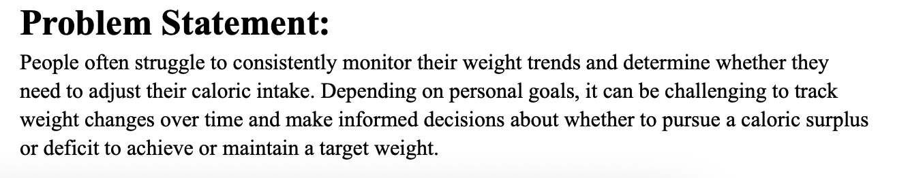
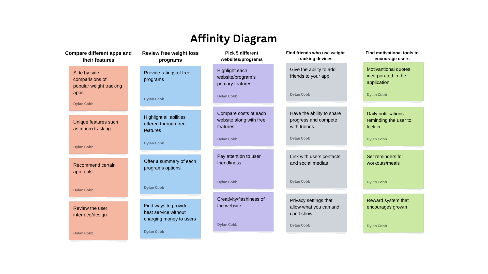
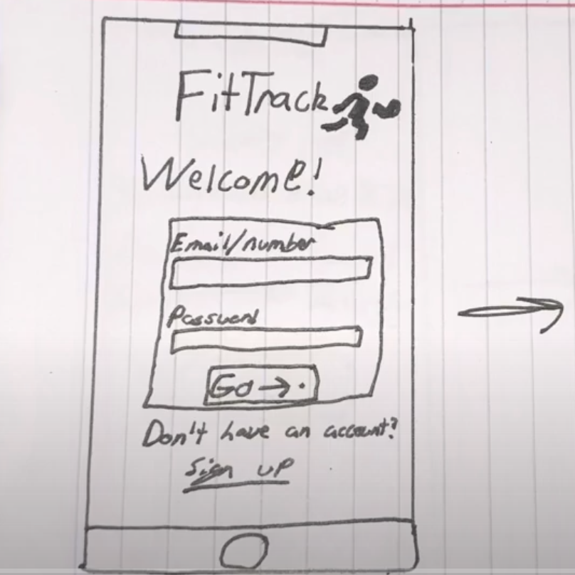
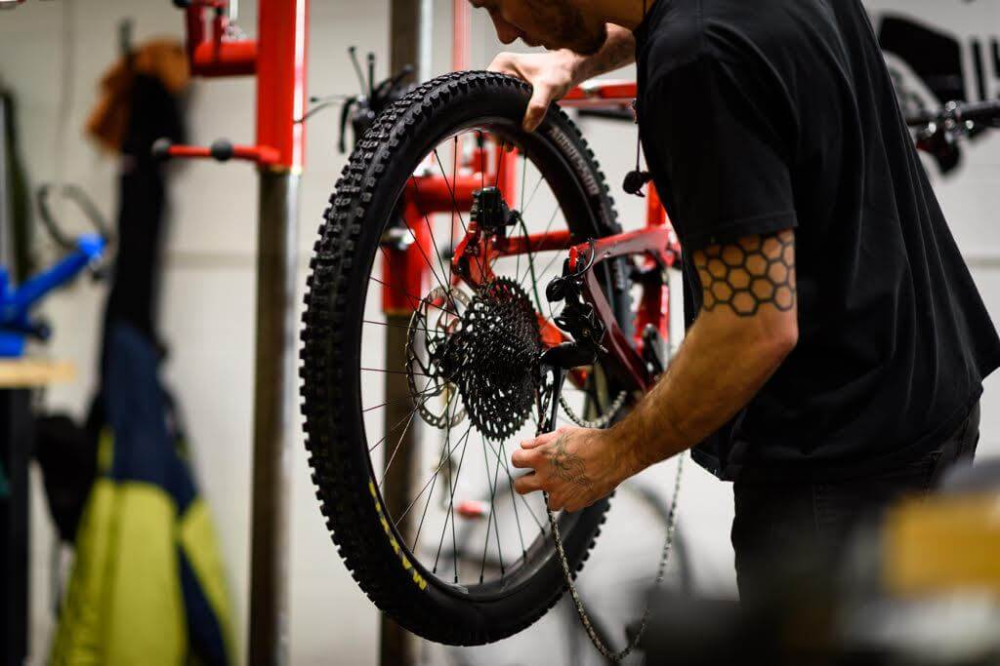

Problem Statement
People often struggle to consistently monitor their weight trends and determine whether they need to adjust their caloric intake. Depending on personal goals, it can be challenging to track weight changes over time and make informed decisions about whether to pursue a caloric surplus or deficit to achieve or maintain a target weight.
Affinity Diagram
Affinity diagram with 5 categories and 20 ideas about weight loss app
Sketches

The sketches contain three personas of people ranging from the ages 18-25. Based on the peoples goals and fitness level, the app will design a program fit for that person.
Video Prototype
The video displays the functionallity of the app FitTrack
Java code for CSCE 145
Java project completed in CSCE 145 (course completed)